gganatogram
gganatogram.RdThis function plots anatograms of specified tissues, species, and sex .
gganatogram(data = NULL, outline = TRUE, fillOutline = "lightgray",
organism = "human", sex = "male", fill = "colour",
anatogram = NULL, ggplot2_only = FALSE)Arguments
- data
The main data frame consisting of what organs to plot, colours, and values. Default is NULL
- outline
logical indicating if the outline of the organism should be plotted
- fillOutline
Fill colour of outline. Default is #a6bddb
- organism
The organism to be plotted. Currently, only
humanis accepted.- sex
Sex of the organism
- fill
How to fill
- anatogram
A list, similar to
hgMale_listthat will create the outline and has the corresponding organdata.frames in that list- ggplot2_only
If
TRUE, will try to use onlyggplot2functionality
Examples
library(ggplot2)
#First lets just plot the outline. Only male human is possible now
gganatogram(fillOutline='#a6bddb', organism='human',
sex='male', fill="colour")
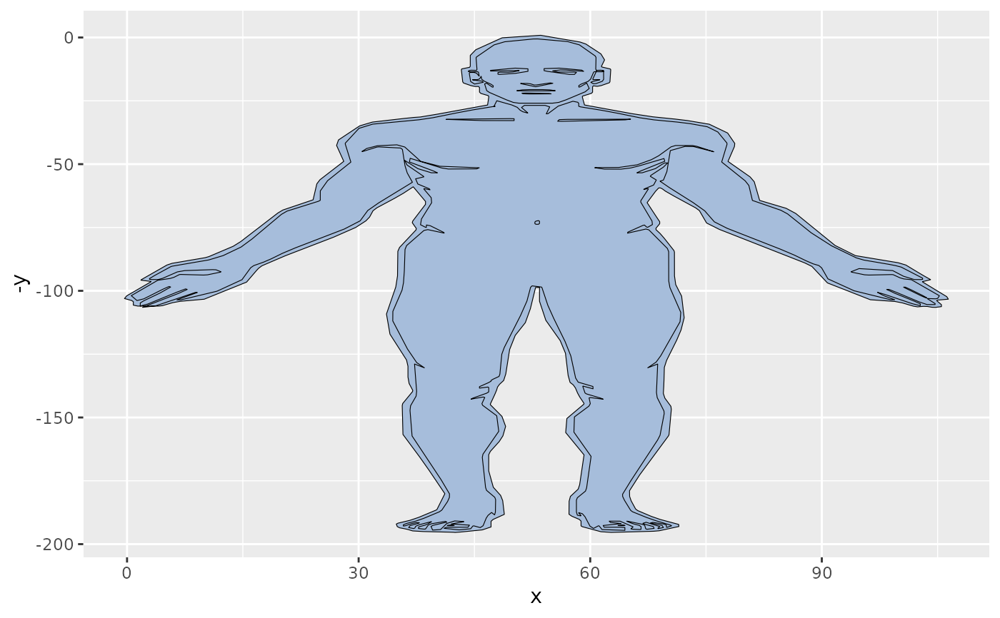
gganatogram(fillOutline='#a6bddb', organism='human',
sex='female', fill="colour")
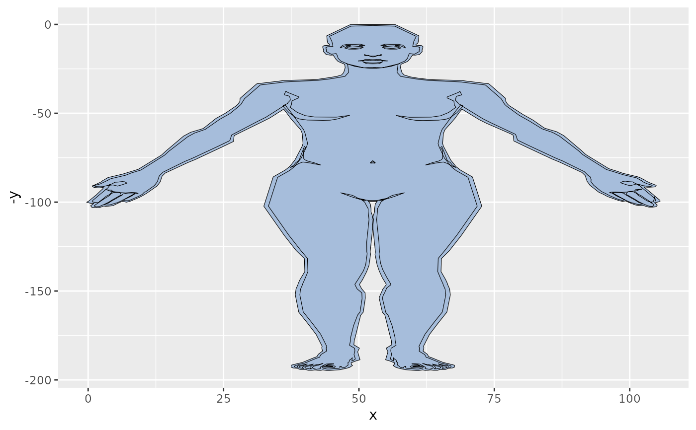
gganatogram(fillOutline='#a6bddb', organism='mouse',
sex='Male', fill="colour")
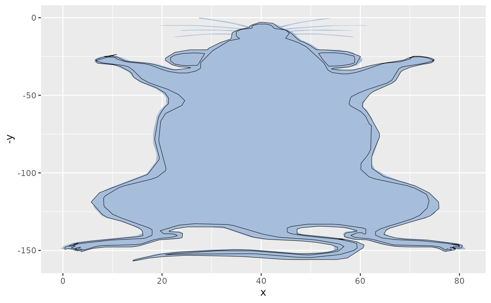
#To add organs, create a data frame with specified tissues
organPlot <- data.frame(organ = c("heart", "leukocyte", "nerve", "brain",
"liver", "stomach", "colon"),
type = c("circulation", "circulation",
"nervous system", "nervous system", "digestion", "digestion",
"digestion"),
colour = c("red", "red", "purple", "purple", "orange",
"orange", "orange"),
value = c(10, 5, 1, 8, 2, 5, 5),
stringsAsFactors=FALSE)
gganatogram(data=organPlot, fillOutline='#a6bddb',
organism='human', sex='male', fill="colour")
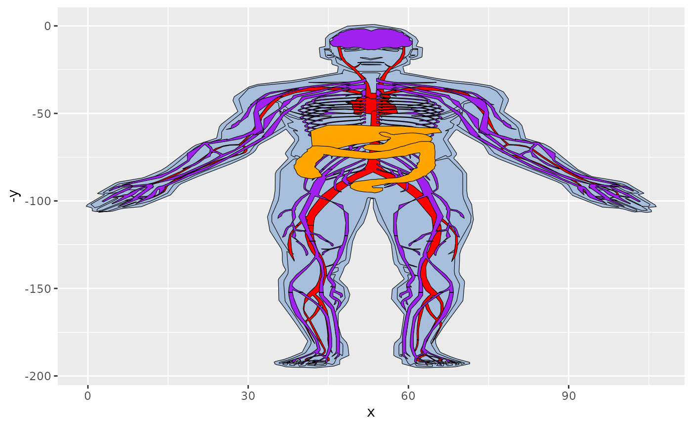
#We can also remove the outline
oplot = gganatogram(data=organPlot, outline=FALSE, fillOutline='#a6bddb',
organism='human', sex='male', fill="colour")
oplot
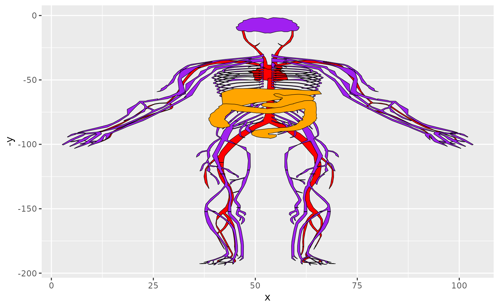
oplot + facet_wrap(~type)
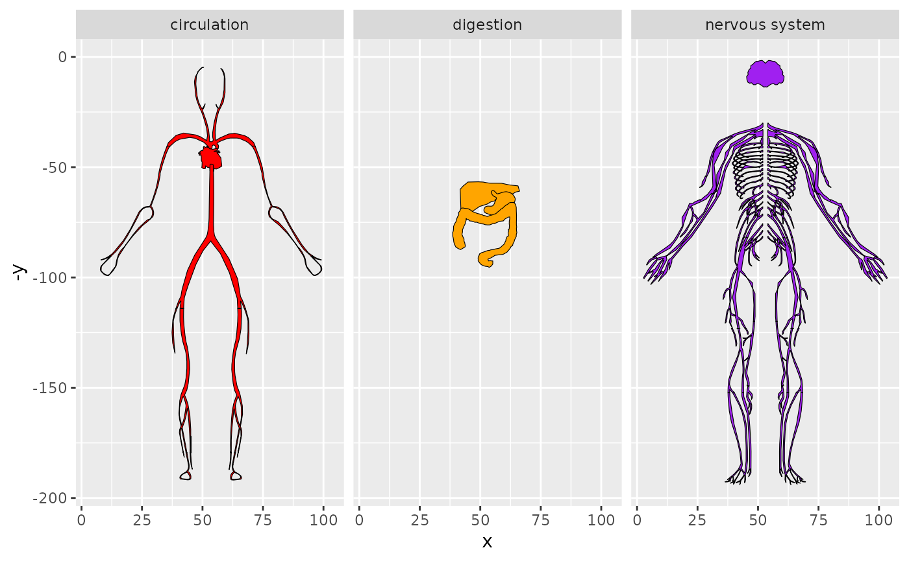
library(dplyr)
#>
#> Attaching package: ‘dplyr’
#> The following objects are masked from ‘package:stats’:
#>
#> filter, lag
#> The following objects are masked from ‘package:base’:
#>
#> intersect, setdiff, setequal, union
organPlot %>%
dplyr::filter(type %in% 'circulation') %>%
gganatogram(fillOutline='#a6bddb', organism='human',
sex='male', fill="colour")
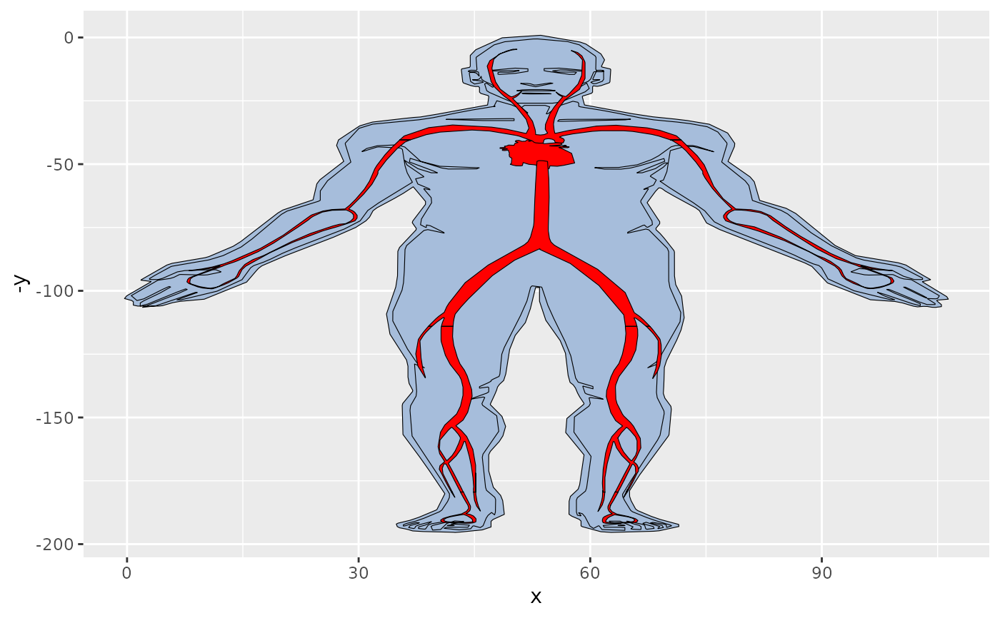
organPlot %>%
dplyr::filter(type %in% c('circulation', 'nervous system')) %>%
gganatogram(fillOutline='#a6bddb', organism='human',
sex='male', fill="value") +
theme_void() +
scale_fill_gradient(low = "white", high = "red")
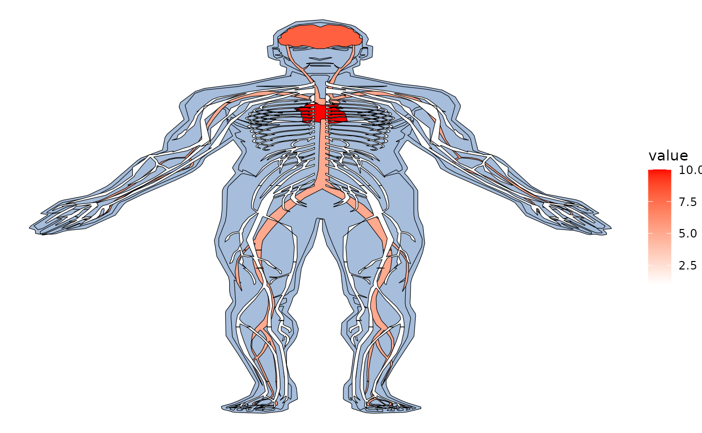
#Use hgMale_key to find all tissues to plot
hgMale_key = gganatogram::hgMale_key
head(hgMale_key)
#> organ type colour value
#> 1 thyroid_gland other #41ab5d 4.672637
#> 2 bone_marrow other #41ab5d 3.310015
#> 3 frontal_cortex nervous_system purple 15.506890
#> 4 prefrontal_cortex nervous_system purple 1.813205
#> 5 pituitary_gland other #41ab5d 12.879309
#> 6 aorta circulation red 17.302852
all_tissues = gganatogram(data=hgMale_key, fillOutline='#a6bddb',
organism='human', sex='male', fill="colour")
all_tissues + theme_void()
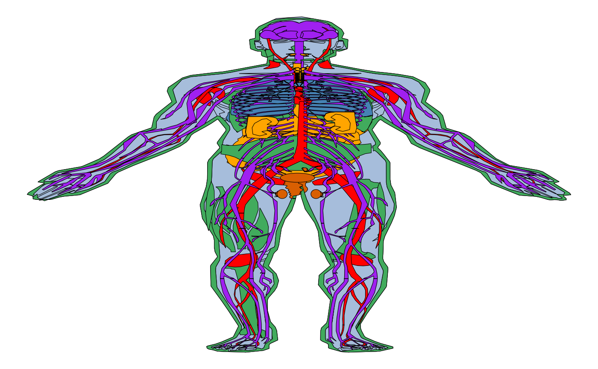
all_tissues + theme_void() + facet_wrap(~type, ncol=3)
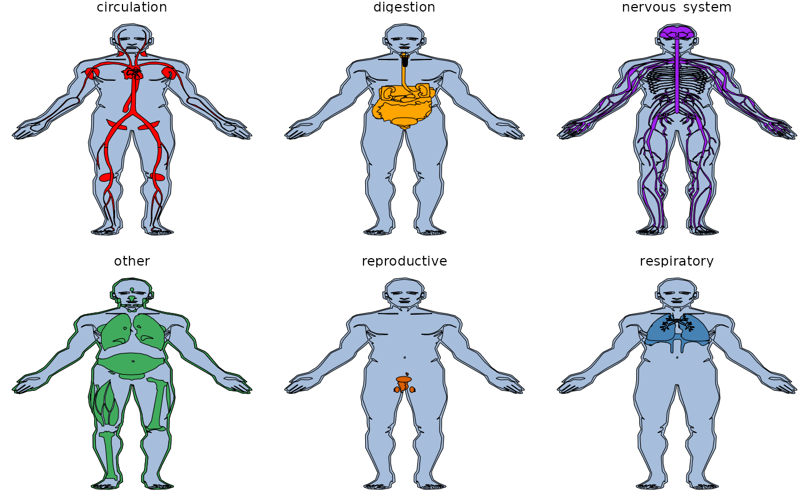
col_fill = gganatogram(data=hgMale_key, fillOutline='#a6bddb',
organism='human', sex='male', fill="colour")
col_fill
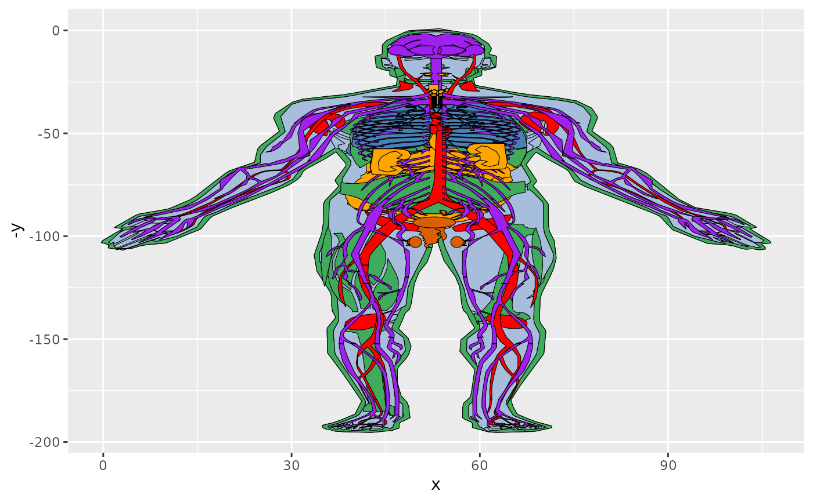
val_fill = gganatogram(data=hgMale_key, fillOutline='#a6bddb',
organism='human', sex='male', fill="value")
val_fill
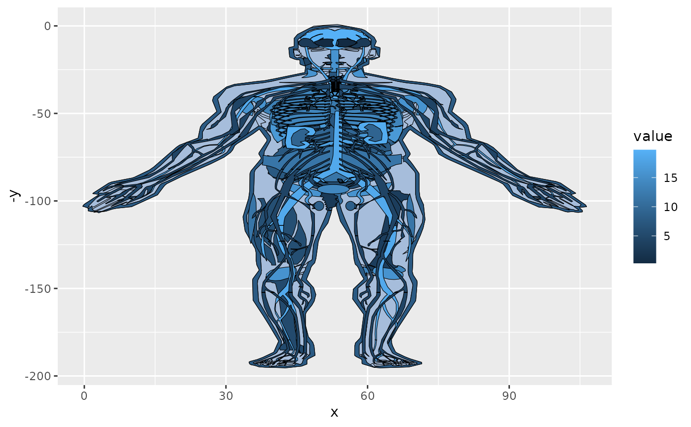
col_fill +facet_wrap(~type, ncol=3) + theme_void()